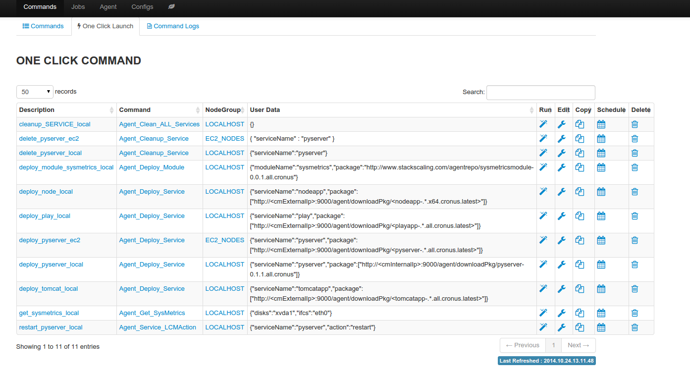

OneClick Launch¶
Oneclick launch captures all the input necessary to launch a command job, this allows a job to be launched with “one click” (or one API call).
Why it is useful
- Deploy or rollback applications with one click or one API call
- Save a job for repeated execution later
- Enhance automation with adaptive smart template parameters, for example can deploy latest application package to target nodes as the application package gets uploaded
Sample oneclick launch
{
"name": "deploy_pyserver_local", // unique name of the oneclick command
"userData": { // custom user data
"exe_retry": "3", // execution options
"mon_retry": "3",
"thrStrategy": "UNLIMITED",
"mon_int": "10"
// user data
"var_values": "{\"serviceName\":\"pyserver\",\"package\":[\"http://<cmInternalIp>:9000/agent/downloadPkg/<pyserver-.*.all.cronus.latest>\"]}",
},
"commandKey": "Agent_Deploy_Service", // command name
"nodeGroupKey": "LOCALHOST" // nodegroup name
}
Create oneclick launch
Oneclick launch can be created in two ways
- From command log tab, save an already executed command job as oneclick launch
- From oneclick launch tab, create by cloning an existing oneclick launch
Smart template parameters
The following smart template parameters can be used in oneclick launch to allow greater degree of reusability
- <cmExternalIp>: reference public IP of the cronus master, value defined in cronusmaster config file
- <cmInternalIp>: reference private IP of the cronus master, value defined in cronusmaster config file
- <service-.*.platform.cronus.latest>: reference latest uploaded package for a service, for example <pyserver-.*.all.cronus.latest> is the latest version of the pyserver package, <pyserver-1.*.all.cronus.latest> is the latest version of 1.x.y of the pyserver package
With smart template parameters, one can create an oneclick launch to deploy latest application package to a group of nodes, without having to change anything in the oneclick launch.
Run oneclick
Run from “oneclick launch” tab with a single click, or one API call, redirect to command job log page upon successful launch.
oneclick launch summary
